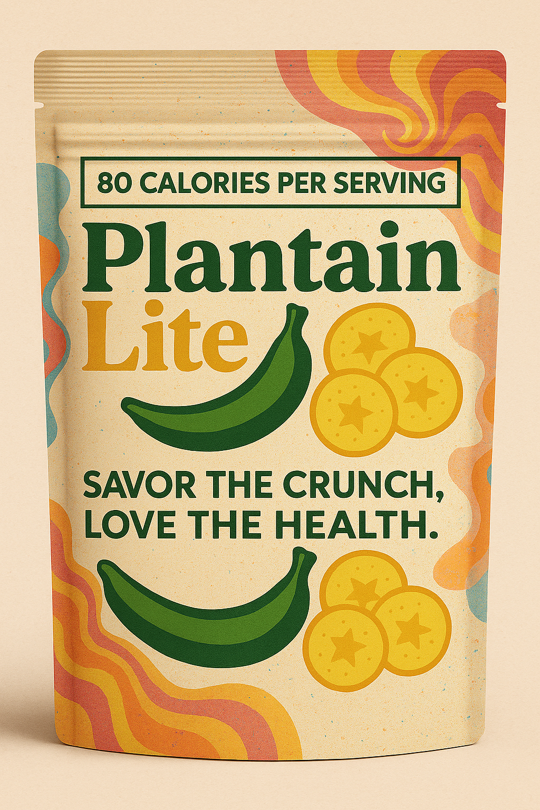

Testing Products with AI-Generated Focus Groups
For the Cuzco Crunch project, Eury and I needed to test two product concepts before committing to one. Instead of recruiting actual participants for a focus group, we decided to try something experimental: using ChatGPT to simulate a focus group with 10 diverse personas.

Cuzco Crunch: Golden plantain slices with Peruvian sal de Maras
The Experimental Design
Two Products to Test
Cuzco Crunch (Product A): Positioned as premium - golden, ultra-crispy plantain slices with Peruvian sal de Maras for a mineral-salt finish. Natural sweetness from plantain, meant to be versatile. Price: $7 for 1.5 oz.
Plantain Lite (Product B): Positioned as everyday - lighter snack with delicate crunch and simple seasoning. Emphasizes convenience and portability. Price: $5 for 1.5 oz.

Plantain Lite: A lighter, everyday plantain chip option
Creating 10 Diverse Personas
We built personas across multiple demographic dimensions: - Gender: Male/Female - Age ranges: 18-25, 26-33, 34-41, 42-50 - Health conditions: Hypertension, obesity, heart disease, asthma, food allergies, digestive issues, or none - Ethnicity: Latino or Not Latino - Location: Urban, suburban, or rural
Examples included: - Young urban health-conscious Latina (18-25, no health conditions) - Middle-aged suburban Latino managing hypertension (42-50) - Young urban non-Latino with food allergies (26-33, gluten/dairy/nuts) - Middle-aged rural non-Latino with obesity (34-41) - Middle-aged rural Latina with multiple conditions (42-50, hypertension + obesity)
The goal was to represent our potential target segments and see how different audiences responded to each product.
The Calibrated Survey
Starting with a Benchmark
We calibrated responses by having participants rate Lay’s Classic Potato Chips first as a reference point. This gave us a common baseline to compare against: - 1 = Unacceptable, wouldn’t eat even if free - 3 = Acceptable/Average, meets basic expectations - 5 = Excellent, exceeds expectations
Comprehensive Rating Categories
The survey covered:
A. Overall Satisfaction (quality, purchase intent, recommendation likelihood)
B. Taste & Flavor (overall taste, flavor intensity, saltiness, naturalness, aftertaste)
C. Texture & Physical Quality (crunchiness, thickness, consistency, oiliness, freshness)
D. Visual Appeal (appearance, color, uniformity, packaging appeal, information clarity)
E. Value & Competitive Positioning (value for money, price sensitivity, preference vs potato chips and competitors)
F. Product Attributes (uniqueness, healthiness, suitability for guests, meeting expectations)
G. Usage Context (purchase frequency, consumption occasions)
Each persona rated 33 quantitative questions plus provided qualitative feedback on likes, improvements, and how they’d describe the product.
What We Learned from the Exercise
AI Can Generate Plausible Responses
ChatGPT was surprisingly good at maintaining consistent personas. The middle-aged rural Latina with hypertension and obesity consistently flagged sodium concerns and price sensitivity across multiple questions. The young urban health-conscious Latina responded positively to premium positioning and cultural connection.
The personas felt internally coherent - their ratings for saltiness, healthiness, and value aligned with their demographic profiles and stated health concerns.
But It’s Still Simulated Data
The fundamental limitation: these aren’t real taste preferences. The AI is generating statistically plausible responses based on stereotypical associations between demographics and preferences.
For example, it “knows” that someone with hypertension should care about sodium, so it rates accordingly. But it can’t actually tell us if our specific salt level tastes good or if the Peruvian sal de Maras provides a noticeably different experience.
Useful for Initial Direction
Where this exercise helped: - Identifying which demographic segments might prefer premium vs everyday positioning - Spotting potential concerns (price sensitivity in rural markets, sodium levels for health-conscious segments) - Practicing survey design before using it with real participants - Understanding how different personas might prioritize different product attributes
Serious Limitations
No Actual Sensory Experience
The biggest problem: ChatGPT hasn’t tasted anything. It can’t tell us if our plantain chips are actually crunchy, if the salt level is genuinely balanced, or if the flavor profile works.
All taste-related responses are based on generic associations (“premium plantain chips should be crunchier,” “simple seasoning means less salty”). These might not match reality.
Reinforces Stereotypes
The AI generates responses based on demographic patterns it learned from training data. This means it might reproduce stereotypical assumptions rather than capturing actual individual preferences.
A real 42-year-old Latino with hypertension might not care about sodium as much as the persona suggests, or might have completely different taste preferences than “typical” for that demographic.
Can’t Capture Real Market Dynamics
Things the simulation can’t tell us: - Whether people would actually notice our product on shelves - If the packaging design triggers emotional responses - Whether word-of-mouth would happen organically - If there are unexpected use cases we haven’t considered - How brand perception builds over time
The Validation Problem
We built in validation checks (questions 31-33) to catch inconsistent rating patterns. But when the AI is generating all responses, it’s just validating its own internal consistency, not actual human behavior.
According to research on AI-generated synthetic data, using LLM outputs as substitutes for human research data can introduce systematic biases that aren’t immediately obvious.
How We’re Actually Using This
Initial Hypothesis Testing
The AI focus group helped us form hypotheses about product positioning: - Cuzco Crunch might appeal more to urban health-conscious consumers willing to pay premium - Plantain Lite could work better for price-sensitive families and convenience-focused shoppers - Both products might face sodium concerns from health-conscious segments
But these are just hypotheses that need real validation.
Survey Design Practice
Building the comprehensive survey instrument was valuable. We learned: - Which questions provide useful differentiation - How to structure rating scales with proper calibration - What validation checks to include - Which demographic factors might matter most
The survey itself is now ready to use with actual participants.
Next Steps with Real People
We’re not making product decisions based on AI responses. The plan is: 1. Use the survey with real taste testers 2. Compare actual results to AI predictions 3. Identify where AI assumptions were wrong 4. Make product decisions based on real preferences
The AI exercise was a dress rehearsal, not the actual performance.
Final Thoughts
Running a virtual focus group with AI personas was an interesting experiment in using LLMs for product development. It’s useful for: - Rapid hypothesis generation - Testing survey instruments - Exploring how different demographic segments might respond - Practicing market research methodologies
But it’s dangerous if you: - Trust the responses as actual market data - Skip real human testing because “we already did AI testing” - Make product decisions based on simulated preferences - Assume the AI understands nuanced taste experiences
For Cuzco Crunch, this exercise helped us structure our research approach and form initial hypotheses. But we’re clear that actual product validation requires real people tasting real chips. The AI can simulate responses, but it can’t simulate whether our plantain chips actually taste good.